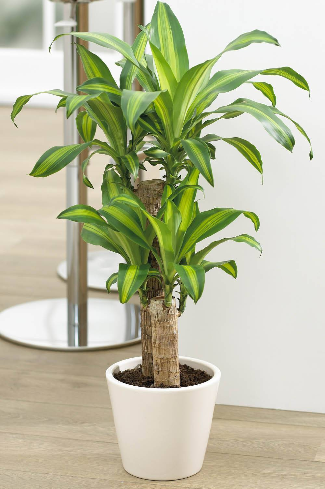
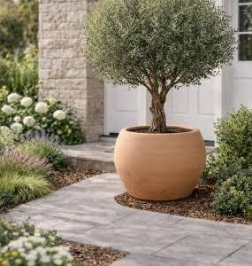
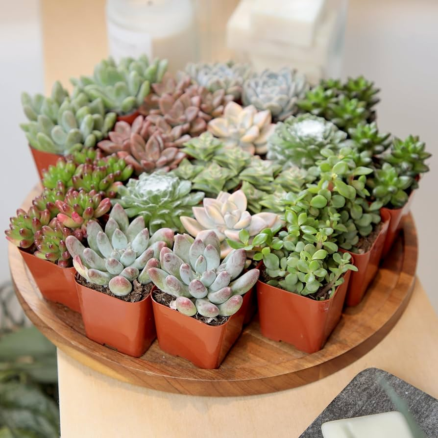
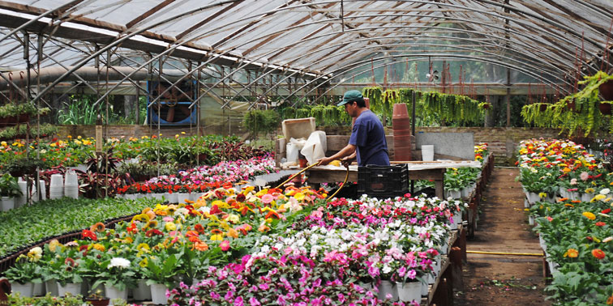

Interior
Para ambientes con luz indirecta y poco viento.
VER PLANTAS →Vivero ubicado en Santa Fe
Mas de 200 especies de interior y exterior, con explicación de cuidados de cada una. Elegi por luz, por riego o por lo que te guste mirar.
Tres familias que cubren casi cualquier rincon: el living con poca luz, el balcon que se lleva todo el sol y el escritorio.

Para ambientes con luz indirecta y poco viento.
VER PLANTAS →
Resisten sol pleno, lluvia y cambios de temperatura.
VER PLANTAS →
Riego cada quince dias. Ideales para empezar.
VER PLANTAS →
Cultivamos en Santa Fe desde 2022. Cada planta que sale de aca paso por nuestras manos y tiene una ficha con lo que necesita para no morirse en dos semanas.